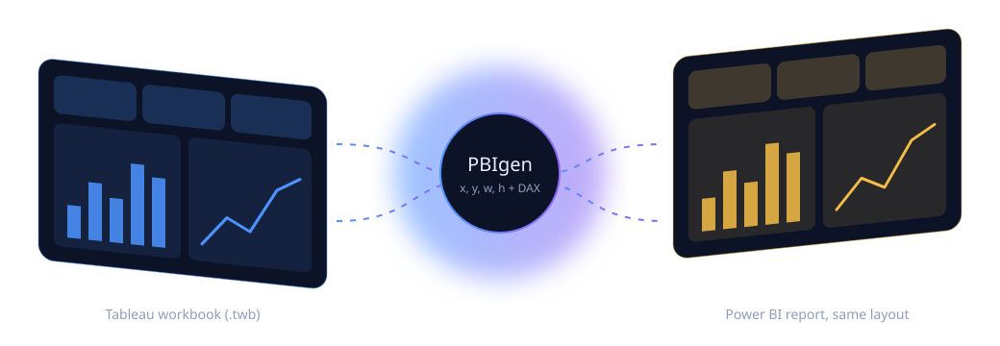
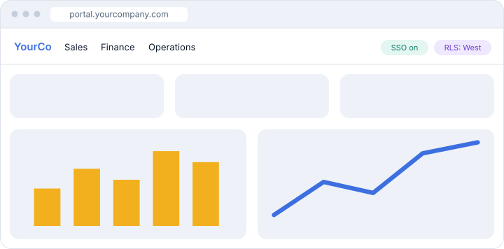

Tableau to Power BI,
converted automatically.
PBIgen automates 60%–100% of dashboard recreation, translates your data logic instantly, and mirrors your exact Tableau canvas positioning in Power BI.

60%–100%
automated visual parity
Exact canvas
spatial layout matching
.twb only
no raw business data
No viewer fees
via the Answergen Portal
What is PBIgen?
PBIgen is an automated software converter that translates Tableau workbook code (.twb XML) into Power BI dashboards. It automates 60% to 100% of visual recreation, matches exact canvas positioning, translates 100% of data logic and measures, and embeds reports in the Answergen User Portal.
Know your migration effort instantly.
Start with a code-only audit: upload your structural .twb file and PBIgen scans layout coordinates, formulas and visual types without touching any raw data.
Option 1
Code-only audit
Structural .twb file only. Zero data. Instant automation score and estimated hours.
Option 2
Sample data audit
Add anonymized or mock CSV for a populated Power BI preview.
Option 3
Live data audit
Add a read-only connection for a fully bound proof-of-concept dashboard.
What converts automatically, visual by visual.
Coverage across Tableau's 28 visual types, grouped by automation level. Data logic and measures translate at 100%.
100%
Fully automated
Bar, line and area
Formatting and binding
Text tables, crosstabs
Matrix, exact alignment
Pie and donut
Palette and legend
90%
Light polish
Treemaps, packed bubbles
Padding and tooltips
Symbol and filled maps
Geographic role check
70%
Tuning needed
Scatter, bubble views
Axis scaling, trendlines
Heat maps, highlight tables
Gradient thresholds
Dual axis, combo
Secondary axis units
60%
Custom visuals
Gantt
AppSource certified visual
Bullet graphs
Targets and thresholds
Box and whisker
Quartile tuning
Polygon, custom maps
GeoJSON alignment
Tableau calculated field
IF [Region] = "West"
THEN SUM([Sales])
ELSE 0 END
Power BI measure (DAX), illustrative
West Sales =
CALCULATE(
SUM(Sales[Sales]),
Sales[Region] = "West" )
PBIgen vs a manual Tableau to Power BI migration.
Comparison of a typical manual rebuild with PBIgen, based on PBIgen's documented capabilities.
Capability
Typical manual migration
PBIgen
Dashboard recreation
Rebuilt by hand, visual by visual
60%–100% automated, depending on visual type
Calculated fields and measures
Rewritten manually as DAX
100% of data logic and measures translated
Layout fidelity
Approximated by eye
Exact canvas coordinates matched
Effort estimate
Scoped through manual review
Audit report in under 60 seconds with hours remaining
Data shared to assess the workbook
Varies by vendor
None, structural .twb XML only
Viewer licensing
Power BI Pro license per viewer, $10–$14 per month
Flat Azure or Fabric capacity through the Answergen Portal
One portal. Unlimited viewers. No per-user fees.
Power BI Pro costs $10–$14 per user each month. PBIgen deploys dashboards into the Answergen User Portal on flat Azure or Fabric capacity instead.
Flat Azure or Fabric capacity
SSO and row-level security
White-label branding

Then grow into the full Answergen AI suite.
Every PBIgen portal can upgrade to the complete analytics platform when you are ready.
Natural language querying
Ask "Show me Q3 revenue by region compared to last year" and get a live chart.
Self-service dashboard creator
Authorized users edit reports or build new dashboards in the browser.
Hybrid data intelligence
Blend private company data with real-time web research, while private knowledge stays isolated and visible only to authorized people.
Industry templates
Finance, sales CRM, supply chain and healthcare.
Mobile dashboards
Auto-generated views for phones and tablets.
Private-source security
Complete data isolation by design.
Questions before you migrate.
Short answers for teams evaluating Tableau to Power BI conversion.
What is PBIgen?
PBIgen is an automated software converter that translates Tableau workbook code (.twb XML) into Power BI dashboards. It automates 60% to 100% of visual recreation, matches exact canvas positioning, and embeds reports in the Answergen User Portal.
Can I convert Tableau dashboards to Power BI without sharing raw data?
Yes. PBIgen parses structural .twb XML only, so no raw business data is required.
How does PBIgen handle Power BI licensing costs?
Dashboards are embedded in the Answergen Portal on flat Azure or Fabric capacity, which removes per-user Power BI Pro viewer licenses.
How much of a Tableau workbook converts automatically?
It depends on the visual type. Bar, line, area, text tables and pie charts convert at 100%, maps and treemaps at 90%, scatter, heat maps and dual-axis charts at 70%, and Gantt, bullet, box plot and custom map visuals at 60%. Tableau data logic and measures are translated at 100%.
What about the part that does not convert automatically?
The audit estimates the remaining developer hours. You can finish the work yourself or request a fixed-cost quote from the PBIgen team.
Find out how much of your Tableau estate converts today.
Upload one .twb file and get your automation score, remaining hours and a fixed-cost quote.